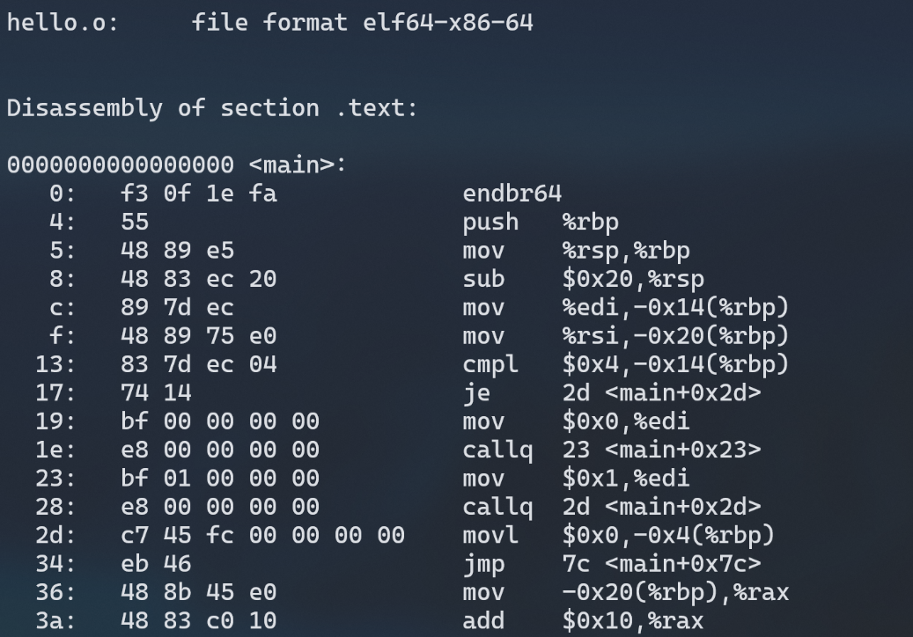
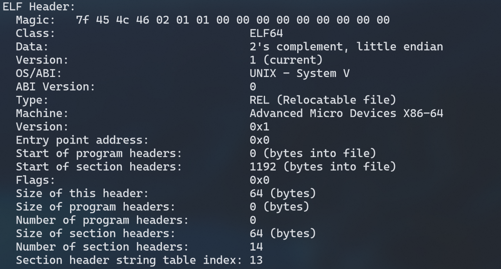
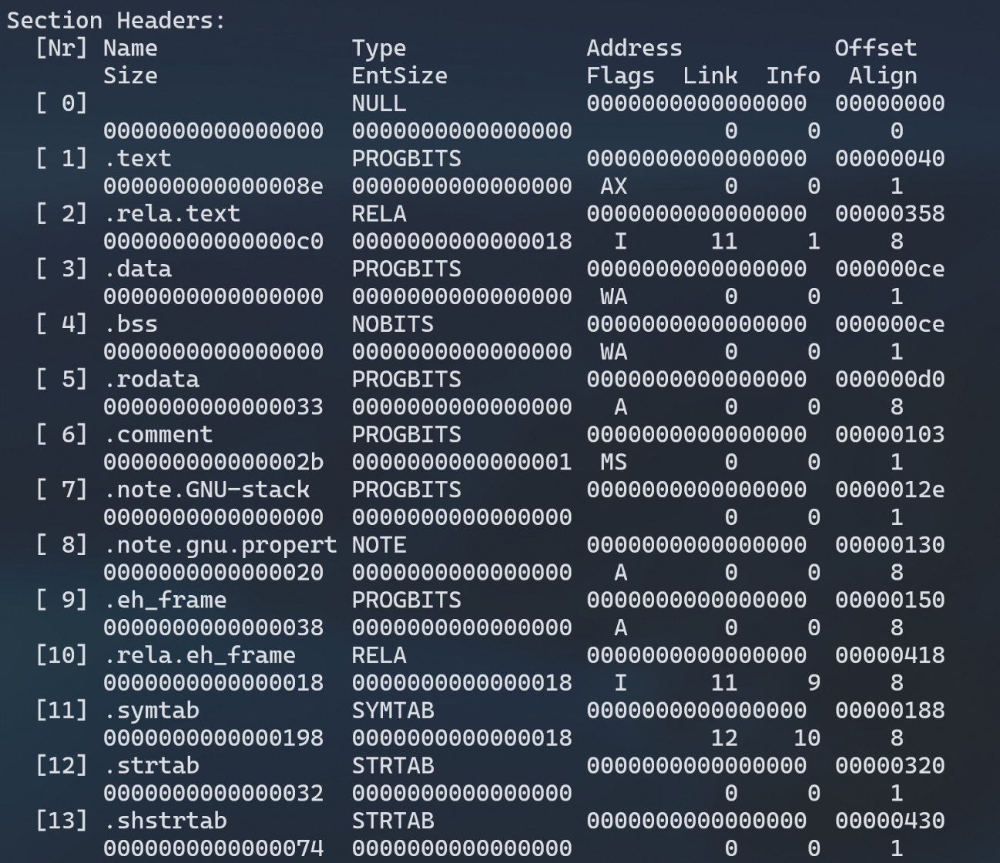
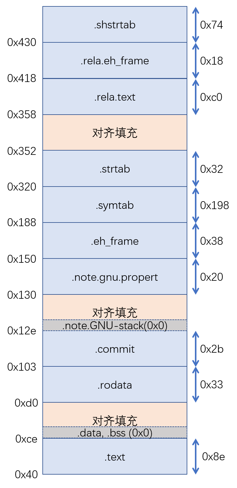
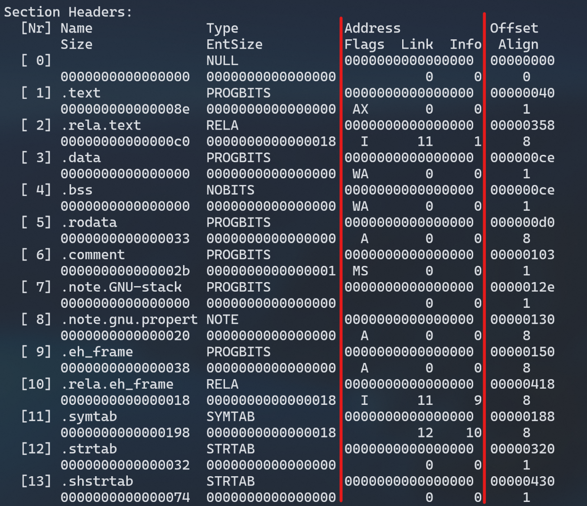
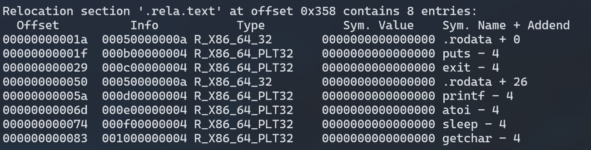
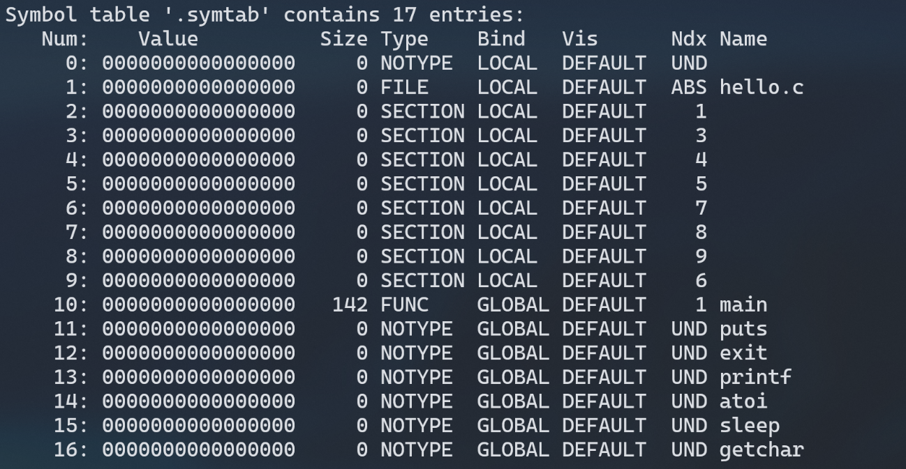
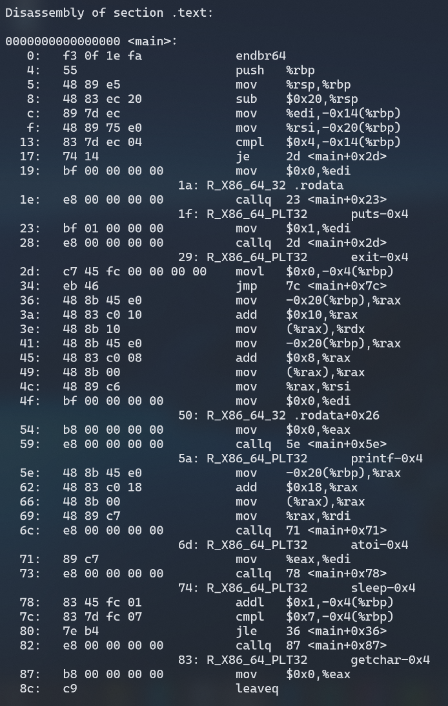
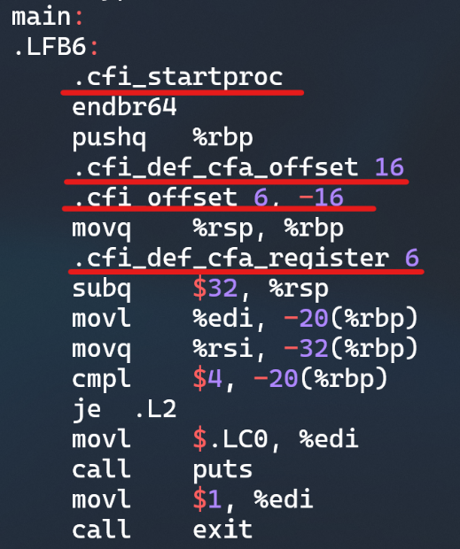
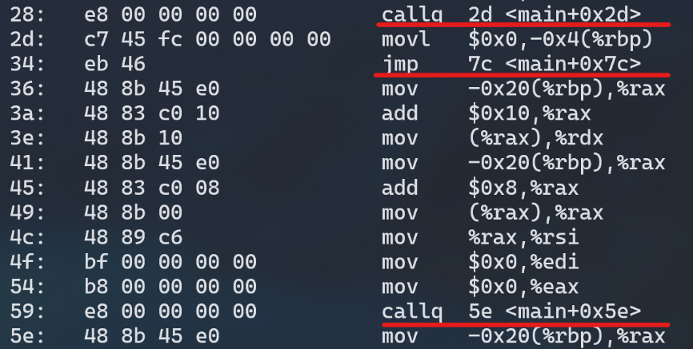

# 第4章 汇编
# 汇编的概念与作用
# 概念
把汇编语言翻译成机器语言的过程称为汇编。
# 作用
汇编器（如as等）将汇编代码翻译成机器语言指令，并把这些指令打包成一种叫做可重定位目标程序的格式，并将结果保存在二进制目标文件中。
# 在Ubuntu下汇编的命令
使用gcc -c进行汇编，如图
使用反汇编objdump -d来查看目标文件内容，示例如下

# 可重定位目标elf格式
# ELF格式分析综述
可重定位目标ELF格式结构如下：
| ELF头 | 字段 e_entry 给出程序时第一条指令的地址 |
|---|---|
| .text节 | 已编译程序的机器代码 |
| .rodata节 | 只读数据，比如 printf 语句中的格式串和开关语句的跳转表 |
| .data节 | 已初始化的全局和静态 C 变量 |
| .bss节 | 未初始化的全局和静态 C 变量 |
| .symtab节 | 存放程序中定义和引用的函数和全局变量信息 |
| .rel.text节 | 一个.text节中位置的列表，链接时修改 |
| .rel.data节 | 被模块引用或定义的所有全局变量的重定位信息 |
| .debug节 | 条目是局部变量、类型定义、全局变量及C源文件 |
| .line节 | 原始 C 源程序的行号和.text 节中机器指令之间的映射 |
| .strtab节 | .symtab和.debug中符号表及节头部中节的名字 |
| 节头表 | 描述目标文件的节 |
表格 6 可重定位ELF格式结构
# ELF头分析
使用readelf可以看到hello.o可重定位文件的ELF头，如下：

各部分解释如下：
| 项目 | 说明 |
|---|---|
| Magic | 用于确定文件的类型或格式 |
| Class： ELF64 | ELF64格式 |
| Data： 2's complement， little endian | 二进制补码格式，小端 |
| Version： 1 (current) | 版本信息Version |
| OS/ABI： UNIX - System V | 操作系统UNIX - System V |
| ABI Version： 0 | ABI版本 |
| Type： REL (Relocatable file) | 可重定位文件 |
| Machine： Advanced Micro Devices X86-64 | Advanced Micro Devices X86-64的机器 |
| Version： 0x1 | 版本 |
| Entry point address： 0x0 | 程序执行的入口地址 |
| Start of program headers： 0 (bytes into file) | 段头部表的开始 |
| Start of section headers： 1112 (bytes into file) | 节头部表的开始 |
| Flags： 0x0 | 一个标志位 |
| Size of this header： 64 (bytes) | ELF头大小 |
| Size of program headers： 0 (bytes) | 段头部表大小 |
| Number of program headers： 0 | 几个段头部表（没有段头部表，所以大小和数量都是0） |
| Size of section headers： 64 (bytes) | 节头部表大小 |
| Number of section headers： 13 | 节头部表数量 |
| Section header string table index： 12 | 字符串表在节头部表中的索引 |
# 节头表分析
用readelf命令同样可以获得hello.o的节头表，如下：

由于节数量较多，下表以.text节为例，列出了.text节的一些基本参数及其解释：
| 参数 | 意义 | 值 |
|---|---|---|
| Size | 大小 | 0x80 |
| Offset | 偏移 | 0x40 |
| Flag | 权限标志位 | AX(alloc + execute) |
| Align | 对齐 | 0x1 |
根据各个节的size、offset、align信息，可以画出各个节的内存位置图，如下：

同时，在输出结果中也可以看到，在链接之前的阶段，各个节的地址都是0x0，如图：

# 重定位节分析
readelf获得的重定位信息如下：

此部分包含了链接时需要的重定位条目，各参数说明如下：
| 参数 | 说明 |
|---|---|
| Offset | 需要进行重定向的代码在.text或.data节中的偏移位置，8 个字节。 |
| Info | 包括 symbol 和 type 两部分，其中 symbol 占前 4 个字节，type 占后 4 个字节，symbol 代表重定位到的目标在.symtab中的偏移量，type 代表重定位的类型。 |
| Addend | 计算重定位位置的辅助信息，共占 8 个字节 |
| Type | 重定位到的目标的类型 |
| Name | 重定向到的目标的名称 |
# 符号表分析
readelf获得的符号表如下：

符号表用来存放程序中定义和引用的函数和全局变量的信息。重定位时，需要引用的符号都在其中声明
# Hello.o的结果解析
使用objdump -d -r hello.o反汇编结果如下：

可以看到，反汇编得到的代码和通过编译得到的代码有一定区别。
- .s汇编代码会有一些指示汇编器的标签，用于标识一些信息，如下图标注部分：

- 分支转移
.s汇编代码用jXX .L2等跳转方式，即跳转一个标签；而反汇编代码跳转指令的操作数使用的不是标签而是相对地址，如<main+0x29>：

- 函数调用
在.s 汇编代码中，函数调用之后直接跟着函数名称，比如call 和exit等。 而在反汇编程序中，hello.c 中调用的函数有些是共享库中的函数，需要在下一步通过动态链接器ld链接之后才能确定函数运行时的执行地址，汇编器把它们编译成机器语言的时候，对于不确定地址的函数调用会将其 call 指令后的相对地址设置为全 0（见图 28 反汇编相对跳转）此时反汇编将字节码翻译成汇编代码是无意义的，需要根据重定位条目在链接阶段进行修改。
# 本章小结
本章通过对于hello.s进行编译，获得hello.o文件，结合汇编的概念及作用分析了汇编对文本.s文件的相应处理，查看 hello.o 的 elf 格式并分析，详细地ELF头，重定位信息和节头部表的各部分详细含义，并对 objdump 得到的反汇编代码与 hello.s 进行比较，了解到从汇编语言映射到机器语言时汇编器需要实现的一些转换，并对结果进行了相应的解析。